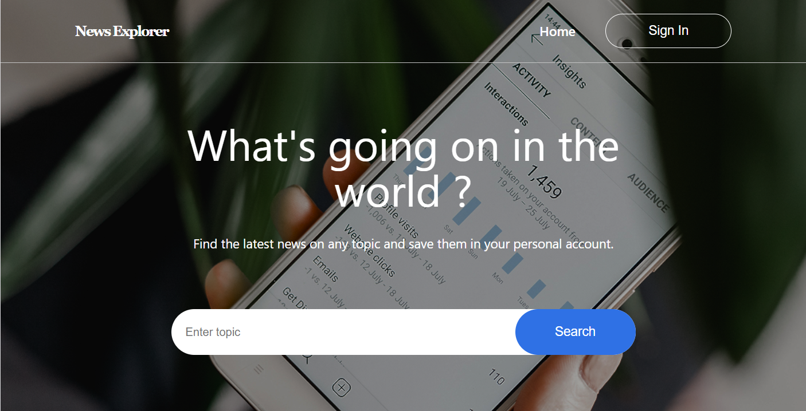

Full-Stack Applications
A collection of full-stack applications demonstrating my experience building responsive user interfaces, backend services, RESTful APIs, authentication systems, database integrations, and external API integrations.
News Explorer | Full-Stack Application

A full-stack news application that allows users to create accounts, authenticate securely, and manage personalized saved articles. Built with separate frontend and backend applications.
- Developed the frontend using React and JavaScript, implementing user registration, login, and application navigation.
- Built a RESTful backend using Node.js and Express to handle authentication and article management.
- Implemented secure authentication using JWT and bcrypt, including protected API routes.
- Integrated MongoDB and Mongoose to persist user accounts and saved articles.
- Implemented user-specific article ownership to ensure users can only manage their own saved articles.
- Deployed the frontend using Vercel and the backend using Render.
Note: News search integration is currently being updated.